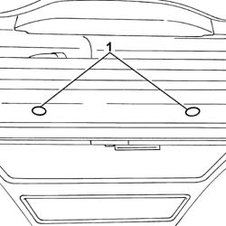
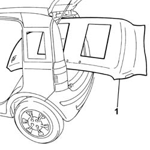

7040H16 roof panel lining - r r
- Path
- Procedures > 70 FITTINGS > 7040 BODYSHELL INTERIOR TRIMS AND FITTINGS > 7040H roof panel lining > 7040H16 roof panel lining - r r
- Kind
- repair procedure (removal / refitting; the operation number is the code)
- Applies to
- all engines; all production periods
- Interactive page
- https://sloeber94.github.io/elrnDB-fPnd/en/#/2753206
Applies to: all engines; all production periods
Applies to: all engines; all production periods
 Removing
Removing
 Refitting
Refitting7040H30 front pillar trim - r r (Both)
7040L42 sill plate connection of one front door (1), lh or rh - r r
7040L40 front compartment scuff strip - r r (Both)
7040H36 central trim lower element - r r (Both)
7040H38 central pillar upper element - r r (Both)
7050A20 one-piece rear seat cushion - r r
7040H50 rear panel - r r (Both)
7040H66 LEFT REAR SIDE TRIM, WITH REAR PARCEL SHELF SUPPORT - R.R .
7040H67 RIGHT REAR SIDE TRIM, WITH REAR PARCEL SHELF SUPPORT - R.R .
7065C30 interior l/h or r/h grab handle (one) - r+r (All)
7040E10 front courtesy light - r+r
7030B34 sliding roof compartment decorative seal - r+r (Both)
7065C34 l/h or r/h sun blind (one) - r+r (Both)
1. Remove fixing buttons using the special tool.
 | Name | Country |
|---|---|---|
- | Scraper blade | 1.878.077.000 |

Applies to: all engines; all production periods
Fold the rear seat backrest over and recline the front seat backrests as far as possible.
1. Remove the roof lining via the tailgate housing.

Applies to: all engines; all production periods
Refitting
RemovingCheck that the roof lining is not damaged.
Fit the roof lining in place and secure it using the special fixing buttons.
7065C34 l/h or r/h sun blind (one) - r+r (Both)
7030B34 sliding roof compartment decorative seal - r+r (Both)
7040E10 front courtesy light - r+r
7065C30 interior l/h or r/h grab handle (one) - r+r (All)
7040H67 RIGHT REAR SIDE TRIM, WITH REAR PARCEL SHELF SUPPORT - R.R .
7040H66 LEFT REAR SIDE TRIM, WITH REAR PARCEL SHELF SUPPORT - R.R .
7040H50 rear panel - r r (Both)
7050A20 one-piece rear seat cushion - r r
7040H38 central pillar upper element - r r (Both)
7040H36 central trim lower element - r r (Both)
7040L40 front compartment scuff strip - r r (Both)
7040L42 sill plate connection of one front door (1), lh or rh - r r
7040H30 front pillar trim - r r (Both)
Connect the battery terminals.
Topics linked from this page (15)
- 5580C air bag system
- 7030B34 sliding roof compartment decorative seal - r+r
- 7040E10 front courtesy light - r+r
- 7040H30 front pillar trim - r r
- 7040H36 central trim lower element - r r
- 7040H38 central pillar upper element - r r
- 7040H50 rear panel - r r
- 7040H66 LEFT REAR SIDE TRIM, WITH REAR PARCEL SHELF SUPPORT - R.R .
- 7040H67 RIGHT REAR SIDE TRIM, WITH REAR PARCEL SHELF SUPPORT - R.R .
- 7040H80 parcel rack
- 7040L40 front compartment scuff strip - r r
- 7040L42 sill plate connection of one front door (1), lh or rh - r r
- 7050A20 one-piece rear seat cushion - r r
- 7065C30 interior l/h or r/h grab handle (one) - r+r
- 7065C34 l/h or r/h sun blind (one) - r+r